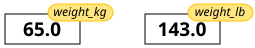

3 + 5 * 423This module has been adapted from https://carpentries.org/, which is freely available for reunder the creative commons licence.
What basic data types can I work with in Python?
How can I create a new variable in Python?
How do I use a function?
Can I change the value associated with a variable after I create it?
How can I get help while learning to program?
Any Python interpreter can be used as a calculator:
3 + 5 * 423This is great but not very interesting.
To do anything useful with data, we need to assign its value to a variable. In Python, we can assign a value to a variable, using the equals sign =. For example, we can track the weight of a patient who weighs 60 kilograms by assigning the value 60 to a variable weight_kg:
weight_kg = 60
print(weight_kg)60From now on, whenever we use weight_kg, Python will substitute the value we assigned to it. In layperson’s terms, a variable is a name for a value.
variable names:
This means that, for example:
weight0 is a valid variable name, whereas 0weight is notweight and Weight are different variablesPython knows various types of data. Three common ones are:
In the example above, variable weight_kg has an integer value of 60.
If we want to more precisely track the weight of our patient, we can use a floating point value by executing:
weight_kg = 60.3
print(weight_kg)60.3To create a string, we add single or double quotes around some text. To identify and track a patient throughout our study, we can assign each person a unique identifier by storing it in a string:
patient_id = '001'
print(patient_id)001Once we have data stored with variable names, we can make use of it in calculations. We may want to store our patient’s weight in pounds as well as kilograms:
weight_lb = 2.2 * weight_kg
print(weight_lb)132.66We might decide to add a prefix to our patient identifier:
patient_id = 'inflam_' + patient_id
print(patient_id)inflam_001To carry out common tasks with data and variables in Python, the language provides us with several built-in functions. To display information to the screen, we use the print function:
print(weight_lb)
print(patient_id)132.66
inflam_001When we want to make use of a function, referred to as calling the function, we follow its name by parentheses. The parentheses are important: if you leave them off, the function doesn’t actually run! Sometimes you will include values or variables inside the parentheses for the function to use. In the case of print, we use the parentheses to tell the function what value we want to display. We will learn more about how functions work and how to create our own in later episodes.
We can display multiple things at once using only one print call:
print(patient_id, 'weight in kilograms:', weight_kg)inflam_001 weight in kilograms: 60.3We can also call a function inside of another function call. For example, Python has a built-in function called type that tells you a value’s data type:
print(type(60.3))
print(type(patient_id))<class 'float'>
<class 'str'>Moreover, we can do arithmetic with variables right inside the print function:
print('weight in pounds:', 2.2 * weight_kg)weight in pounds: 132.66Note: The above command, however, did not change the value of weight_kg:
print(weight_kg)60.3To change the value of the weight_kg variable, we have to assign weight_kg a new value using the equals = sign:
weight_kg = 65.0
print('weight in kilograms is now:', weight_kg)weight in kilograms is now: 65.0Use the built-in function help to get help for a function. Every built-in function has extensive documentation that can also be found online.
help(print)Help on built-in function print in module builtins:
print(...)
print(value, ..., sep=' ', end='\n', file=sys.stdout, flush=False)
Prints the values to a stream, or to sys.stdout by default.
Optional keyword arguments:
file: a file-like object (stream); defaults to the current sys.stdout.
sep: string inserted between values, default a space.
end: string appended after the last value, default a newline.
flush: whether to forcibly flush the stream.
This help message (the function’s “docstring”) includes a usage statement, a list of parameters accepted by the function, and their default values if they have them.
It is normal to encounter error messages while programming, whether you are learning for the first time or have been programming for many years. We will discuss error messages in more detail later. For now, let’s explore how people use them to get more help when they are stuck with their Python code.
Search the internet: paste the last line of your error message or the word “python” and a short description of what you want to do into your favourite search engine and you will usually find several examples where other people have encountered the same problem and came looking for help.
StackOverflow can be particularly helpful for this: answers to questions are presented as a ranked thread ordered according to how useful other users found them to be.
Take care: copying and pasting code written by somebody else is risky unless you understand exactly what it is doing!
Ask somebody “in the real world”.
If you have a colleague or friend with more expertise in Python than you have, show them the problem you are having and ask them for help.
We will discuss more debugging strategies in greater depth later in the lesson.
A variable in Python is analogous to a sticky note with a name written on it: assigning a value to a variable is like putting that sticky note on a particular value.

Using this analogy, we can investigate how assigning a value to one variable does not change values of other, seemingly related, variables. For example, let’s store the subject’s weight in pounds in its own variable:
# There are 2.2 pounds per kilogram
weight_lb = 2.2 * weight_kg
print('weight in kilograms:', weight_kg, 'and in pounds:', weight_lb)weight in kilograms: 65.0 and in pounds: 143.0Everything in a line of code following the ‘#’ symbol is a comment that is ignored by Python. Comments allow programmers to leave explanatory notes for other programmers or their future selves.

Similar to above, the expression 2.2 * weight_kg is evaluated to 143.0, and then this value is assigned to the variable weight_lb (i.e. the sticky note weight_lb is placed on 143.0). At this point, each variable is “stuck” to completely distinct and unrelated values.
Let’s now change weight_kg:
weight_kg = 100.0
print('weight in kilograms is now:', weight_kg, 'and weight in pounds is still:', weight_lb)weight in kilograms is now: 100.0 and weight in pounds is still: 143.0
Since weight_lb doesn’t “remember” where its value comes from, it is not updated when we change weight_kg.
What values do the variables mass and age have after each of the following statements? Test your answer by executing the lines.
mass = 47.5
age = 122
mass = mass * 2.0
age = age - 20mass = 47.5
print(mass)
age = 122
print(age)
mass = mass * 2.0
print(mass)
age = age - 20
print(age)47.5
122
95.0
102Python allows you to assign multiple values to multiple variables in one line by separating the variables and values with commas. What does the following program print out?
first, second = 'Grace', 'Hopper'
third, fourth = second, firstprint(third, fourth)Hopper GraceWhat are the data types of the following variables?
planet = 'Earth'
apples = 5
distance = 10.5print(type(planet))
print(type(apples))
print(type(distance))<class 'str'>
<class 'int'>
<class 'float'>variable = value to assign a value to a variable in order to record it in memory.print(something) to display the value of something.# some kind of explanation to add comments to programs.help(thing) to view help for something.